5 Probability
5.1 From Data Description to Probability
5.1.1 Observed Data vs Underlying Process
In the previous section, we focused on describing data using graphical and numerical summaries.
However, an important limitation arises:
- the data we observe are only a finite realization
- they come from a process that could generate many possible outcomes
For example, in the simulated school data:
- we observe a group of students
- but if we repeated the data collection, we would obtain different values
- the overall pattern would persist, but individual observations would change
This suggests that the data are generated by an underlying process.
Data description focuses on what was observed. Probability goes one step further: it provides a mathematical framework for describing what could have been observed under the same conditions.
This distinction is fundamental in statistics. A dataset is not usually viewed as a unique and isolated object. Instead, it is treated as one realization from a process that could be repeated. Even when we cannot literally repeat the process, probability allows us to reason as if there exists an underlying mechanism generating outcomes with some regularity.
For example, if we record test scores from a class, the specific scores depend on the particular students, the specific exam, and many small random influences. A different group of students or a different day could produce different values. Even so, the process generating the scores may still have a stable overall structure, such as a typical center, variability, and shape.
Thus, probability is introduced not as an abstract topic disconnected from data, but as a way to model the variability we see in real observations.
5.1.2 The Idea of a Theoretical Distribution
Definition 5.1 (Theoretical Distribution) A theoretical distribution is a mathematical description of all possible outcomes of a process and their associated likelihoods.
A theoretical distribution:
- describes all possible values of a variable
- assigns a likelihood (probability) to each value
- is typically not fully observable
We only observe a sample from this distribution.
This perspective is fundamental:
- statistics studies data
- probability models the process that generates the data
A theoretical distribution is not the same as the observed frequency table from a particular dataset. The observed data give only partial information about the underlying distribution. In practice, the theoretical distribution is often unobserved and must be approximated, estimated, or justified using scientific knowledge.
For a simple example, if we toss a coin many times, we do not directly observe the full probability model. We observe a sequence of Heads and Tails. The theoretical distribution is the mathematical description that says which outcomes are possible and how likely they are.
In more complicated settings, the theoretical distribution may involve a very large set of possible values. For example, the exact score a student obtains on an exam may be viewed as arising from an underlying distribution of possible performance values.
Probability models are useful because they allow us to reason beyond the observed data. They let us describe long-run tendencies, assess how unusual an observation is, and anticipate the variability in future observations.
5.1.3 Example: Repeated Sampling Interpretation
To understand this idea, imagine repeating the same study many times:
- each repetition produces a different sample
- the observed values vary
- but all samples come from the same underlying mechanism
This underlying mechanism defines the distribution of possible outcomes.
This repeated sampling point of view is central in probability and later in statistical inference. Although in practice we usually observe only one sample, probability asks us to think about the full collection of samples that could arise if the process were repeated under similar conditions.
This idea helps explain why sample summaries vary. The sample mean, the sample proportion, and the sample variance all change from sample to sample. Probability provides the language for describing this variation.
Another important insight is that the data-generating mechanism is not directly visible. What we actually observe is the output of the mechanism. Probability models try to describe that mechanism in a mathematically manageable way.
## [1] "Heads" "Heads" "Tails" "Tails" "Heads" "Tails" "Tails" "Heads" "Tails" "Heads"5.1.4 Deterministic vs Random Phenomena
We distinguish between:
- Deterministic phenomena: outcomes are fully predictable
- Random phenomena: outcomes are uncertain
Definition 5.2 (Random Phenomenon) A random phenomenon is a process whose outcome cannot be predicted with certainty.
Most real-world processes in data analysis are random:
- test scores
- attendance
- number of absences
Probability provides a framework to model this uncertainty.
A deterministic phenomenon is one in which the same input always leads to the same output. For example, in elementary arithmetic, the sum of 2 and 3 is always 5. There is no uncertainty.
By contrast, a random phenomenon has variability that cannot be eliminated, even if the process appears similar each time it is repeated. For example, two students with similar preparation may still obtain different exam scores. Two days with similar classroom conditions may still lead to different attendance counts.
Random does not mean chaotic or without structure. In statistics, random phenomena are often highly structured. The exact outcome is uncertain, but the overall pattern may still be stable enough to model.
This is precisely why probability is useful: it gives a systematic way to describe uncertainty without requiring exact prediction of individual outcomes.
5.2 Probability as a Model for Uncertain and Complex Phenomena
5.2.1 Why We Need a Model
In practice:
- we cannot observe all possible outcomes
- data are subject to variability
- uncertainty is unavoidable
Without a model:
- we cannot generalize beyond the observed data
Probability provides:
- a way to describe variability
- a way to quantify uncertainty
- a foundation for prediction
A model simplifies reality while preserving the features that matter for the question at hand. In probability, a model identifies the possible outcomes and assigns probabilities to them.
This is important because raw data alone cannot answer every question we care about. If we only record what happened once, we do not automatically know what is typical, what is rare, or what might happen in the future.
A probability model provides this broader view. It acts as an idealized description of the mechanism generating the data. This idealization is useful even when the model is not perfectly true, as long as it captures the key features of variability in a reasonable way.
Without a probability model, inference becomes informal and unreliable. There is no principled way to judge whether an observed result is surprising or whether an apparent pattern could just be due to chance.
5.2.2 Probability as a Distribution
Probability assigns a number to each outcome:
- between 0 and 1
- representing its likelihood
These probabilities define a distribution.
This distribution can be interpreted as:
- long-run relative frequencies
- theoretical likelihoods of outcomes
A probability distribution is the mathematical object that summarizes how uncertainty is allocated across possible outcomes.
If some outcomes are more likely than others, the distribution reflects that difference. If all outcomes are equally likely, the distribution assigns equal probabilities.
For discrete settings, the distribution can often be written directly by listing the probabilities of each value. For continuous settings, the idea is similar, but probabilities are assigned to intervals rather than single points.
The concept of distribution is one of the most important in all of probability and statistics. Later topics such as sampling distributions, confidence intervals, and hypothesis tests all depend on understanding how quantities are distributed.
5.2.3 Connection to Data
It is essential to distinguish:
- Data: what we observe
- Probability: the model for all possible outcomes
This relationship can be summarized as:
- Data = one realization
- Probability = full distribution
This distinction will be critical for:
- sampling distributions
- statistical inference
The observed data are finite and concrete. The probability model is theoretical and more general. The two are connected, but they are not the same thing.
In practice, we often use the observed data to learn about the probability model. For example, we might use a histogram to suggest the shape of a distribution, or a sample mean to estimate a population mean.
At the same time, probability helps us interpret the data. It tells us how much variability to expect from sample to sample and how likely certain outcomes would be if the model were true.
This back-and-forth relationship between data and probability is at the heart of statistical reasoning.
5.3 Random Experiments
Definition 5.3 (Random Experiment) A random experiment is a process that produces outcomes that cannot be predicted with certainty.
Examples include:
- selecting a student at random
- recording a test score
- counting the number of absences
Each repetition of the experiment may produce a different outcome.
A random experiment is not limited to physical experiments such as tossing a coin or rolling a die. In statistics, any repeatable observation process with uncertain outcome can be treated as a random experiment.
The word experiment should be interpreted broadly. Selecting a household, measuring blood pressure, observing whether a student passes an exam, and counting the number of late arrivals in a class can all be viewed as random experiments.
A random experiment typically has three basic ingredients:
- a clearly defined procedure
- a set of possible outcomes
- uncertainty about which outcome will occur
The outcome of one repetition may differ from another, but the overall mechanism is assumed to remain stable enough for probability modeling to be meaningful.
5.4 Sample Space and Events
5.4.1 Sample Space
Definition 5.4 (Sample Space) The sample space is the set of all possible outcomes of a random experiment.
Examples:
- coin toss: \({H, T}\)
- number of absences: \({0,1,2,\dots}\)
- test score: all possible values within a range
The sample space is usually denoted by \(S\) or \(\Omega\). It is the most complete description of what can happen in the experiment.
When the experiment is simple, the sample space may be listed explicitly. For example, for one coin toss the sample space is \({H, T}\). For rolling one die, the sample space is \({1,2,3,4,5,6}\).
In more complicated situations, the sample space may be large or even infinite. For example, if the variable of interest is the amount of time a student spends studying, the sample space may be all nonnegative real numbers.
Identifying the sample space is the first step in defining a probability model because probabilities are assigned to events built from this set.
5.4.2 Events
Definition 5.5 (Event) An event is a subset of the sample space.
Examples:
- scoring above 80
- passing an exam
- having at least 3 absences
Events represent the outcomes of interest.
An event is not necessarily a single outcome. It may contain one outcome, many outcomes, or even all outcomes in the sample space.
For example:
- in rolling a die, the event “rolling an even number” is \({2,4,6}\)
- in exam scores, the event “passing” may be all scores greater than or equal to 70
- in counting absences, the event “at least 3 absences” includes all values 3, 4, 5, and so on
Events are useful because in applications we are often interested in questions, not just raw outcomes. We ask whether a student passed, whether a value exceeds a threshold, or whether a count falls in a certain range. Each of these questions corresponds to an event.
5.4.3 Event Operations
We can combine events using set operations:
- Union: \(A \cup B\) (A or B or both)
- Intersection: \(A \cap B\) (A and B)
- Complement: \(A^c\) (not A)
These operations allow us to construct complex events from simpler ones.
If \(A\) is the event that a student passes math and \(B\) is the event that the same student passes reading, then:
- \(A \cup B\) is the event that the student passes at least one of the two subjects
- \(A \cap B\) is the event that the student passes both subjects
- \(A^c\) is the event that the student does not pass math
These set operations are important because many probability rules are based directly on them. They provide the language for expressing more complicated questions in a mathematically precise way.
5.5 Probability
5.5.1 Definition of Probability
Definition 5.6 (Probability) Probability assigns a number between 0 and 1 to each event, representing its likelihood.
Probability measures the chance that an event occurs. A probability near 0 indicates that the event is very unlikely, while a probability near 1 indicates that it is very likely.
The value 0 corresponds to an impossible event, and the value 1 corresponds to a certain event.
Probability does not predict with certainty what will happen in one trial. Instead, it describes the long-run tendency or theoretical likelihood of events under a specified model.
For example, saying that the probability of Heads on a fair coin is 0.5 does not mean Heads and Tails will alternate perfectly. It means that, over many repetitions, Heads should occur about half the time.
5.5.2 Basic Properties
For any event \(A\):
- \(0 \leq P(A) \leq 1\)
- \(P(S) = 1\)
- \(P(A^c) = 1 - P(A)\)
These properties ensure that probabilities behave consistently.
The first property says probability cannot be negative and cannot exceed 1. The second says that something in the sample space must happen, so the total probability is 1. The third gives the probability of an event not occurring.
Together, these properties form the foundation of probability calculations. More complicated rules follow from them.
5.6 Probability Rules
5.6.1 Complement Rule
\[ P(A^c) = 1 - P(A) \]
The complement rule is especially useful when the complement of an event is easier to compute than the event itself.
For example, if we want the probability of getting at least one success in repeated trials, it is often simpler to compute the probability of getting no successes and subtract from 1.
This rule reflects the fact that an event and its complement together exhaust the entire sample space.
5.6.2 Addition Rule (General)
For any two events:
\[ P(A \cup B) = P(A) + P(B) - P(A \cap B) \]
This rule accounts for the possibility that events overlap.
If we simply add \(P(A)\) and \(P(B)\), any outcomes belonging to both events are counted twice. Subtracting \(P(A \cap B)\) corrects for this double counting.
This is one of the most important formulas in probability because many practical problems involve combinations of events.
5.6.3 Addition Rule (Mutually Exclusive Events)
If \(A\) and \(B\) cannot occur together:
\[ P(A \cup B) = P(A) + P(B) \]
Events that cannot happen at the same time are called mutually exclusive.
For mutually exclusive events, the intersection is empty, so there is no overlap to subtract. This makes the addition rule simpler.
For example, when rolling one die, the event “roll a 1” and the event “roll a 2” are mutually exclusive.
The following simulation illustrates several basic rules of probability using two fair dice.
Let:
- \(A\) = the event that the first die is even
- \(B\) = the event that the second die is greater than 4
- \(C\) = the event that the first die is 1
- \(D\) = the event that the first die is 2
This simulation illustrates:
- the complement rule: \(P(A^c) = 1 - P(A)\)
- the multiplication rule for independent events: \(P(A \cap B) = P(A)P(B)\)
- the addition rule: \(P(A \cup B) = P(A) + P(B) - P(A \cap B)\)
- the addition rule for mutually exclusive events: \(P(C \cup D) = P(C) + P(D)\)
set.seed(2026)
# Simulate rolling two fair dice
n <- 100000
die1 <- sample(1:6, size = n, replace = TRUE)
die2 <- sample(1:6, size = n, replace = TRUE)
# Define events
A <- die1 %% 2 == 0 # first die is even
B <- die2 > 4 # second die is greater than 4
C <- die1 == 1 # first die is 1
D <- die1 == 2 # first die is 2
# Probabilities
pA <- mean(A)
pB <- mean(B)
pAc <- mean(!A)
pAandB <- mean(A & B)
pAorB <- mean(A | B)
pC <- mean(C)
pD <- mean(D)
pCorD <- mean(C | D)
# Print results
print(paste0("P(A): ", round(pA, 4)))## [1] "P(A): 0.4972"## [1] "P(B): 0.3319"## [1] "P(A^c): 0.5028"## [1] "1 - P(A): 0.5028"## [1] "P(A and B): 0.1651"## [1] "P(A)P(B): 0.165"## [1] "P(A or B): 0.6641"## [1] "P(A) + P(B) - P(A and B): 0.6641"## [1] "P(C): 0.1679"## [1] "P(D): 0.1664"## [1] "P(C or D): 0.3342"## [1] "P(C) + P(D): 0.3342"5.7 Conditional Probability
5.7.1 Definition
Definition 5.7 (Conditional Probability) The conditional probability of an event \(A\) given \(B\) is \[ P(A \mid B) = \frac{P(A \cap B)}{P(B)}. \]
Conditional probability updates probabilities when additional information is available.
It answers the question: what is the probability that \(A\) occurs once we know that \(B\) has occurred?
The key idea is that once \(B\) is known to have occurred, the relevant sample space changes. We no longer consider outcomes outside of \(B\). The probability is therefore recalculated relative to that reduced set of outcomes.
This makes conditional probability a natural tool for modeling information. It formalizes how probabilities change when we learn something new.
5.7.2 Multiplication Rule
\[ P(A \cap B) = P(A \mid B) P(B) \]
This allows us to compute joint probabilities.
The multiplication rule is just a rearrangement of the definition of conditional probability, but it is extremely useful in applications.
It says that the probability of both \(A\) and \(B\) occurring can be found by first considering the probability that \(B\) occurs and then multiplying by the probability that \(A\) occurs given that \(B\) has occurred.
This rule is fundamental in tree diagrams, sequential probability problems, and many later statistical models.
Consider drawing two cards from a standard deck without replacement.
Let:
- \(A\) = the event that the first card is an Ace
- \(B\) = the event that the second card is an Ace
These events are not independent because once the first card is drawn, the composition of the deck changes.
The multiplication rule gives
\[ P(A \cap B) = P(B \mid A)P(A). \]
set.seed(2026)
# Create a deck: 4 Aces and 48 non-Aces
deck <- c(rep("Ace", 4), rep("Not Ace", 48))
# Number of simulations
n <- 100000
# Storage
firstAce <- logical(n)
secondAce <- logical(n)
# Simulate drawing 2 cards without replacement
for(i in 1:n){
cards <- sample(deck, size = 2, replace = FALSE)
firstAce[i] <- cards[1] == "Ace"
secondAce[i] <- cards[2] == "Ace"
}
# Compute probabilities
pA <- mean(firstAce)
pBgivenA <- mean(secondAce[firstAce])
pAandB <- mean(firstAce & secondAce)
# Print results
print(paste0("P(A): ", round(pA, 4)))## [1] "P(A): 0.0763"## [1] "P(B | A): 0.055"## [1] "P(A and B): 0.0042"## [1] "P(B | A)P(A): 0.0042"The event \(A\) is that the first card is an Ace, and the event \(B\) is that the second card is an Ace.
Because the cards are drawn without replacement, these events are dependent. If the first card is an Ace, then only 3 Aces remain among the 51 remaining cards, so
\[ P(B \mid A) = \frac{3}{51}. \]
Also,
\[ P(A) = \frac{4}{52}. \]
Therefore, the multiplication rule gives
\[ P(A \cap B) = P(B \mid A)P(A) = \frac{3}{51}\frac{4}{52}. \]
The simulated values of P(A and B) and P(B | A)P(A) should be very close, illustrating the multiplication rule for dependent events.
5.8 Independence
5.8.1 Definition
Definition 5.8 (Independence) Two events \(A\) and \(B\) are independent if \[ P(A \cap B) = P(A)P(B). \]
Independence is one of the most important ideas in probability.
It describes a situation in which the occurrence of one event provides no information about the occurrence of the other.
When events are independent, knowing that one occurred does not change the probability of the other.
5.8.2 Interpretation
Independence means:
- the occurrence of one event does not affect the probability of the other
Equivalently, if \(P(B) > 0\), independence can be written as
\[ P(A \mid B) = P(A). \]
This expression makes the interpretation especially clear: once we know that \(B\) happened, the probability of \(A\) is unchanged.
It is important not to confuse independence with mutual exclusivity. If two events are mutually exclusive and both have positive probability, they cannot be independent because the occurrence of one prevents the occurrence of the other.
Independence is often assumed in probability models because it greatly simplifies calculations, but it should always be justified by the context of the problem.
Consider tossing a fair coin two times.
Let:
- \(A\) = the event that the first toss is Heads
- \(B\) = the event that the second toss is Heads
These events are independent because the result of the first toss does not affect the result of the second toss.
For independent events,
\[ P(A \cap B) = P(A)P(B). \]
set.seed(2026)
# Number of simulations
n <- 100000
# Simulate two independent coin tosses
toss1 <- sample(c("Heads", "Tails"), size = n, replace = TRUE)
toss2 <- sample(c("Heads", "Tails"), size = n, replace = TRUE)
# Define events
A <- toss1 == "Heads"
B <- toss2 == "Heads"
# Compute probabilities
pA <- mean(A)
pB <- mean(B)
pAandB <- mean(A & B)
# Print results
print(paste0("P(A): ", round(pA, 4)))## [1] "P(A): 0.502"## [1] "P(B): 0.5001"## [1] "P(A and B): 0.2521"## [1] "P(A)P(B): 0.251"# Exact probabilities
pA_exact <- 1/2
pB_exact <- 1/2
pAandB_exact <- pA_exact * pB_exact
print(paste0("Exact P(A): ", round(pA_exact, 4)))## [1] "Exact P(A): 0.5"## [1] "Exact P(B): 0.5"## [1] "Exact P(A and B): 0.25"The event \(A\) is that the first toss is Heads, and the event \(B\) is that the second toss is Heads.
Because the tosses are independent,
\[ P(A \cap B) = P(A)P(B). \]
Since each toss is fair,
\[ P(A) = \frac{1}{2} \quad \text{and} \quad P(B) = \frac{1}{2}, \]
so
\[ P(A \cap B) = \frac{1}{2}\frac{1}{2} = \frac{1}{4}. \]
The simulated values of P(A and B) and P(A)P(B) should be very close, illustrating the multiplication rule for independent events.
5.9 Random Variables
5.9.1 Definition
Definition 5.9 (Random Variable) A random variable is a function that assigns a numerical value to each outcome in the sample space.
Random variables allow us to:
- move from outcomes to numerical analysis
- compute averages and variability
A random variable is not simply a number that changes randomly. It is a rule that turns outcomes into numerical values.
For example, if we toss a coin three times, the underlying outcomes are sequences such as HHT or TTH. A random variable could be defined as the number of Heads. Then HHT and TTH both receive the value 2.
This allows us to work with numerical summaries rather than with the full complexity of the sample space.
Random variables are central because most statistical analysis is carried out on numerical variables, not directly on raw outcomes.
5.9.2 Discrete Random Variables
Discrete random variables take countable values.
Examples:
- number of absences
- number of correct answers
A discrete random variable may have a finite number of possible values or a countably infinite number of values.
These variables typically arise from counting processes. Because their possible values can be listed, probabilities can be assigned directly to each value.
Examples include the number of successes in repeated trials, the number of defects in a batch, or the number of arrivals in a time period.
5.9.3 From Discrete to Continuous
Up to this point we have assigned probability directly to individual values of a random variable. This works naturally for discrete random variables, such as the number of heads in coin flips or the number of customers arriving in a store. In those settings, it makes sense to ask for probabilities like \(P(X=3)\) or \(P(X=10)\).
Many quantities in science and data analysis, however, are not naturally discrete. Measurements such as time, temperature, weight, voltage, and distance vary on a continuum. When we measure them, we record a finite number of decimal places, but conceptually they can take any value within an interval. These are modeled using continuous random variables.
A continuous random variable takes values on an interval (or a union of intervals) of the real line. Unlike discrete random variables, which take a countable set of values, a continuous random variable can take uncountably many possible values.
A key conceptual difference is that for a continuous random variable, \[ P(X = x) = 0 \] for any specific value \(x\). Individual points have zero probability because probability is spread continuously across an interval rather than concentrated at individual values.
This can initially feel counterintuitive. If \(X\) represents a measurement such as height, surely someone could have height exactly \(170\) cm. But in a continuous model, the probability of observing that exact number is zero because there are infinitely many possible values near 170, and probability is distributed across all of them.
The appropriate question is not “What is the probability that \(X\) equals exactly 170?” but rather:
\[ P(169.5 \le X \le 170.5). \]
We assign probability to intervals, not individual points.
Simulation example:
set.seed(2026)
x <- runif(n = 100000, min = 0, max = 100)
# Zero Probability for a Point
pro50 <- mean(x == 50) # always 0
# Non-zero probability for an Interval
proInt <- mean(49 < x & x < 51)
print(paste0("Probability getting exactly 50: ", round(pro50 * 100, 2), "%"))## [1] "Probability getting exactly 50: 0%"## [1] "Probability getting around 50: 2.03%"The simulation shows two important facts:
- The probability of observing exactly 50 is essentially zero.
- The probability of observing a value near 50 is positive.
Even though values close to 50 occur frequently, the probability of observing exactly 50 is zero in a continuous model.
Because single points have zero probability, probability must be assigned to intervals rather than individual values. For example,
\[ P(a \le X \le b) \]
represents the probability that \(X\) falls within an interval. Graphically, this probability corresponds to the area under a curve between \(a\) and \(b\).
This shift—from point probabilities to interval probabilities—is the defining feature of continuous distributions and marks the transition from discrete probability to continuous probability.
5.9.4 Continuous Random Variables
Continuous random variables take values in an interval.
Examples:
- time spent studying
- exam scores (treated as continuous)
A continuous random variable can take any value in some interval of the real line.
For these variables, probabilities are assigned to intervals rather than individual points. In a continuous model,
\[ P(Y = y) = 0 \]
for any single value \(y\).
This does not mean the value is impossible. It means that probability is spread continuously over an interval rather than concentrated at individual points.
5.10 Distributions of Random Variables
5.10.1 Distribution Induced by a Random Variable
A random variable induces a distribution by assigning probabilities to its values.
This distribution describes the long-run behavior of the variable.
Once a random variable is defined, the probability model for the original experiment produces a probability distribution for the numerical values of the variable.
This distribution tells us which values are possible, how likely they are, and how the variable behaves over repeated realizations of the experiment.
In this sense, the random variable provides the bridge between the sample space and the numerical summaries we use in statistics.
5.10.2 Probability Mass Function
For discrete variables:
\[ P(Y = y) \]
The probability mass function, or pmf, assigns a probability to each possible value of a discrete random variable.
To be a valid pmf:
- each probability must be between 0 and 1
- the probabilities over all possible values must add to 1
The pmf provides a complete description of the distribution of a discrete random variable.
5.10.3 Probability Density Function
For continuous variables:
- probabilities are assigned to intervals
- not individual points
A continuous random variable is described by a probability density function, or pdf.
The pdf does not directly give probabilities at a point. Instead, probabilities are computed as areas under the density curve over intervals.
This is a major conceptual shift from discrete distributions. The height of the density curve is not itself a probability. Probability is represented by area.
5.10.4 Cumulative Distribution Function
\[ F(y) = P(Y \leq y) \]
The CDF provides a complete description of the distribution.
For any random variable, discrete or continuous, the cumulative distribution function gives the probability that the variable is less than or equal to a specified value.
The CDF is useful because it allows us to compute interval probabilities:
\[ P(a < Y \leq b) = F(b) - F(a) \]
It is nondecreasing and always takes values between 0 and 1.
5.11 Expected Value and Variance
5.11.1 Expected Value
Definition 5.10 (Expected Value) The expected value is the long-run average value of a random variable.
It represents the center of the distribution.
The expected value is a theoretical quantity defined by the probability model, not by one observed dataset. It tells us where the distribution is centered in the long run.
For a discrete random variable, the expected value is a probability-weighted average of the possible values. For a continuous random variable, it is defined using an integral.
The expected value is especially important because it formalizes the idea of an average outcome over many repetitions.
5.11.2 Variance
Definition 5.11 (Variance) Variance measures the variability of a random variable around its mean.
Variance quantifies how spread out the values are.
A distribution may have a certain center, but values may cluster tightly around that center or be widely spread. Variance measures this dispersion.
Because variance is measured in squared units, the standard deviation, which is the square root of the variance, is often easier to interpret. Still, variance is fundamental mathematically and appears throughout probability and statistics.
5.11.3 Properties of Expectation
Linearity:
\[ E(aY + b) = aE(Y) + b \]
This linearity property is one of the most useful rules in probability.
It says that scaling and shifting a random variable affects its expected value in a simple way. This allows us to compute expected values of transformed variables without first deriving the full transformed distribution.
More generally, for sums of random variables, expectation is additive.
5.11.4 Properties of Variance
\[ \mathbb{V}(aY + b) = a^2 \mathbb{V}(Y) \]
Variance is unaffected by adding a constant and is multiplied by the square of the scaling factor when the variable is multiplied by a constant.
This makes sense intuitively:
- adding a constant shifts all values equally and does not change spread
- multiplying by \(a\) stretches or shrinks the distribution, so the variance scales by \(a^2\)
5.11.5 Law of Total Expectation
Definition 5.12 (Law of Total Expectation) The expected value of a random variable can be computed by conditioning on another variable.
\[ E(Y) = E[E(Y \mid X)] \]
This result says that the overall mean of \(Y\) can be found by first computing conditional means and then averaging those conditional means over the distribution of \(X\).
It is a powerful identity because it breaks complicated expectation problems into smaller conditional pieces.
Conceptually, it says that the mean of the whole population can be obtained as a weighted average of subgroup means.
5.11.6 Linear Combinations
5.11.6.1 Expected Value of Linear Combinations
\[ E\left(\sum a_i Y_i\right) = \sum a_i E(Y_i) \]
This property holds whether the variables are independent or dependent.
It is one of the reasons expectation is so easy to work with. We do not need independence to add expectations.
5.11.6.2 Variance of Linear Combinations (Independent Variables)
\[ \mathbb{V}\left(\sum a_i Y_i\right) = \sum a_i^2 \mathbb{V}(Y_i) \]
This formula holds when the random variables are independent.
It shows how variability accumulates when independent random quantities are combined. This result is fundamental for understanding sums, averages, and sampling distributions.
5.11.6.3 Variance of Linear Combinations (Dependent Variables)
\[ \mathbb{V}(Y_1 + Y_2) = \mathbb{V}(Y_1) + \mathbb{V}(Y_2) + 2\text{Cov}(Y_1, Y_2) \]
When variables are dependent, covariance must be included.
Covariance measures the extent to which the variables move together. Positive covariance increases the variance of the sum, while negative covariance decreases it.
This is why dependence matters so much in probability and statistics.
5.12 Important Probability Distributions
5.12.1 Discrete Distributions
5.12.1.1 Binomial Distribution
Used to model:
- number of successes in repeated independent trials
The binomial distribution is appropriate when:
- there is a fixed number of trials \(n\)
- each trial has two outcomes, usually called success and failure
- the probability of success \(p\) is the same on every trial
- the trials are independent
If \(Y\) is the number of successes, then \(Y\) follows a binomial distribution.
This distribution is useful in many applications, such as counting the number of students who pass an exam, the number of defective items in a sample, or the number of correct answers on a multiple choice test.
Its center and spread depend on \(n\) and \(p\), and later it will play an important role in sampling and inference.
5.12.1.1.1 Binomial Examples
5.12.1.1.1.1 Coin Flips Example
Twenty independent coin flips with probability of heads \(p=0.5\). Let \(X\) be the number of heads.
## [1] 10 11 10 13 11 11 12 9 5 11All binomial conditions hold: fixed \(n\), two outcomes, constant probability, independence.
5.12.1.1.1.2 Not Binomial — Fails identical trials
Suppose the probability of success changes from trial to trial (for example, a machine that becomes less reliable over time). Then the trials are not identical, and the binomial model does not apply.
5.12.1.1.1.3 Not Binomial — Fails only two outcomes
Rolling a die produces six outcomes, not two. If we are counting something more complex than success/failure, the binomial model is inappropriate unless we recode outcomes into two categories.
5.12.1.1.2 PMF of the Binomial
Definition 5.13 (Binomial PMF) For a binomial random variable \(X \sim \text{Binomial}(n,p)\), the probability of observing exactly \(k\) successes is \[ P(X=k) = \binom{n}{k} p^k (1-p)^{n-k}, \] for \(k = 0,1,2,\ldots,n\).
This formula gives the probability of obtaining exactly \(k\) successes in \(n\) independent trials when the probability of success on each trial is \(p\).
Here:
- \(n\) is the number of trials
- \(p\) is the probability of success on each trial
- \(k\) is the number of observed successes
Each part of the formula has a clear interpretation.
The term
\[ \binom{n}{k} \]
counts the number of different ways in which \(k\) successes can be arranged among the \(n\) trials.
The term
\[ p^k (1-p)^{n-k} \]
is the probability of any one specific sequence containing exactly \(k\) successes and \(n-k\) failures.
Since there are
\[ \binom{n}{k} \]
different sequences with exactly \(k\) successes, multiplying these two parts gives the total probability of observing exactly \(k\) successes.
For example, suppose \(n=3\) and \(k=2\). Then the sequences with exactly 2 successes are:
- success, success, failure
- success, failure, success
- failure, success, success
There are 3 such sequences, which is exactly
\[ \binom{3}{2}=3. \]
Each one has probability
\[ p^2(1-p), \]
so
\[ P(X=2)=\binom{3}{2}p^2(1-p)=3p^2(1-p). \]
This illustrates the general structure of the binomial pmf:
- count how many valid sequences exist
- multiply by the probability of one such sequence
5.12.1.1.3 Binomial Visualization
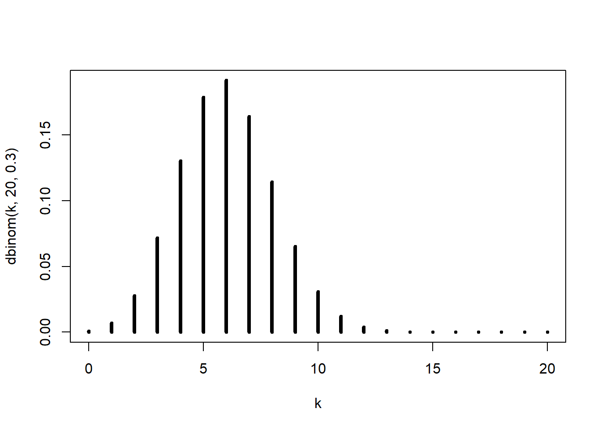
This plot displays the probability mass function of a binomial random variable with \(n=20\) and \(p=0.3\).
The height of each vertical line represents the probability of observing that particular number of successes. Since the binomial distribution is discrete, the graph is shown with separate spikes rather than a continuous curve.
This visualization helps us understand the shape of the distribution.
The shape of the binomial distribution depends on the value of \(p\):
- if \(p = 0.5\), the distribution is approximately symmetric
- if \(p < 0.5\), the distribution is right-skewed
- if \(p > 0.5\), the distribution is left-skewed
When \(p=0.3\), the most likely values are below the middle of the possible range because success is less likely than failure.
As \(n\) becomes large, the binomial distribution becomes more bell-shaped, especially when \(p\) is near \(0.5\). This is one reason why the normal distribution is often used as an approximation to the binomial distribution for large sample sizes.
The plot also reinforces an important idea: the binomial distribution assigns probability to each possible count of successes, and the pmf tells us exactly how those probabilities are distributed across the values \(0,1,\ldots,n\).
5.12.1.2 Poisson Distribution
Used to model:
- number of events in a fixed interval
The Poisson distribution is often used for counts of events that occur randomly over time, space, or another continuous dimension.
Typical examples include:
- number of arrivals in a fixed time interval
- number of defects in a length of material
- number of emails received in an hour
A Poisson model is especially useful when events occur independently and at a roughly constant average rate.
One of its important features is that its mean and variance are both controlled by the same parameter, usually denoted by \(\lambda\).
5.12.2 Continuous Distributions
5.12.2.1 Continuous Uniform
A continuous uniform distribution on \([a,b]\) has density
\[ f(x) = \frac{1}{b-a}, \quad a \le x \le b. \]
Simulation:
x <- runif(10000,0,10)
hist(x, probability=TRUE, breaks=30)
curve(dunif(x,0,10), add=TRUE, col="red", lwd=2)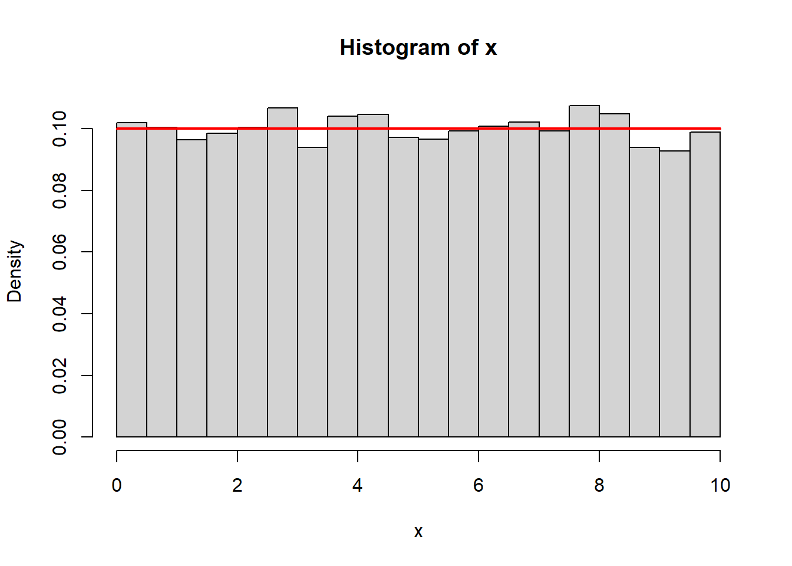
5.12.2.2 From Discrete to Continuous Uniform
If we refine a discrete uniform grid enough, it begins to resemble a continuous uniform distribution.
samSiz <- 10000
x <- sample(seq(0,10,length=samSiz), samSiz, TRUE)
hist(x, probability=TRUE, breaks=30)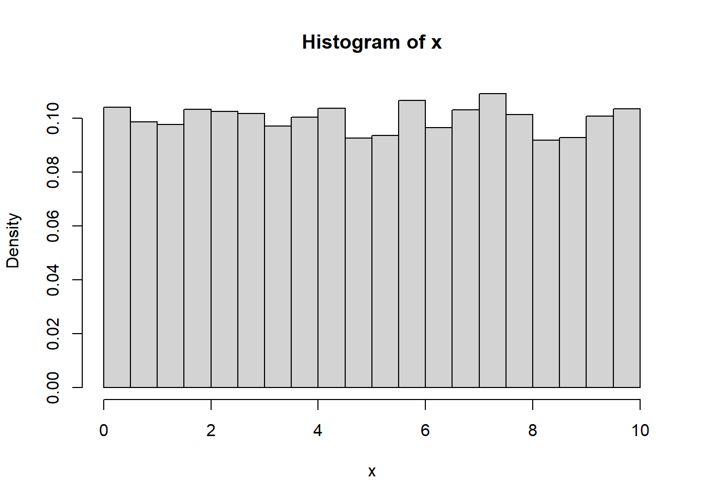
On a fine grid, discrete and continuous uniform models can look nearly identical.
5.12.2.3 The Normal Distribution
The normal distribution is the most important distribution in statistics. It serves both as a theoretical model and as a practical approximation for many real-world phenomena.
It appears in:
- measurement error
- biological traits
- averages and sample means
- noise in physical and engineering systems
Because of its mathematical properties and frequent appearance in data, the normal distribution is a central reference point for statistical modeling.
5.12.2.3.1 Where Does It Come From?
The normal distribution often arises as the sum of many small, independent effects. Each individual effect may not be normal, but their sum tends to be approximately normal. This phenomenon is formalized by the Central Limit Theorem (which we will study later).
A computational illustration helps build intuition.
set.seed(2026)
s <- replicate(10000, sum(runif(10, -1, 1)))
hist(s, probability=TRUE, breaks=40,
main="Sum of Uniform Variables",
col="lightgray", border="white")
curve(dnorm(x, mean(s), sd(s)),
add=TRUE, col="red", lwd=2)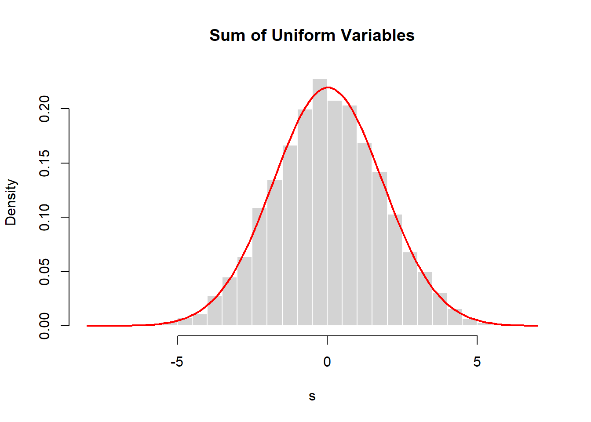
Each observation in s is the sum of 10 uniform random variables. Even though the underlying variables are not normal, the distribution of their sum is approximately normal.
This idea explains why normal distributions appear so often:
Many processes are influenced by numerous small, independent factors. Their combined effect tends to be approximately normal.
5.12.2.3.2 The Normal Curve
If \(X \sim N(\mu,\sigma^2)\), its probability density function is
\[ f(x)=\frac{1}{\sqrt{2\pi\sigma^2}}e^{-(x-\mu)^2/(2\sigma^2)}. \]
The parameters have clear interpretations:
- \(\mu\) controls the center (location)
- \(\sigma\) controls the spread (scale)
Visualization:
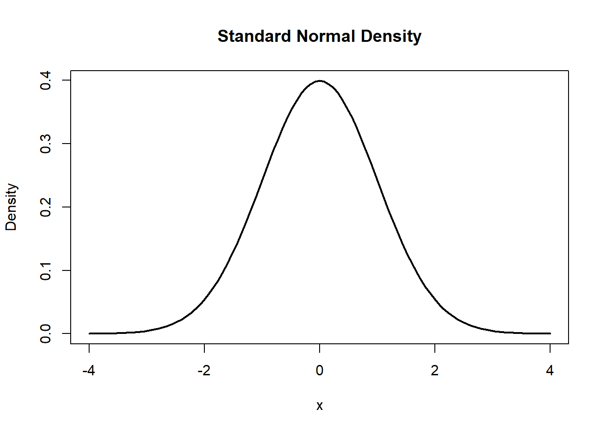
This is the standard normal distribution, which has \(\mu=0\) and \(\sigma=1\).
Changing parameters shifts or stretches the curve:
curve(dnorm(x,0,1), -6,6, lwd=2, col="black",
main="Effect of Mean and SD")
curve(dnorm(x,2,1), add=TRUE, col="blue", lwd=2)
curve(dnorm(x,0,2), add=TRUE, col="red", lwd=2)
legend("topright",
legend=c("N(0,1)", "N(2,1)", "N(0,2)"),
col=c("black","blue","red"),
lwd=2)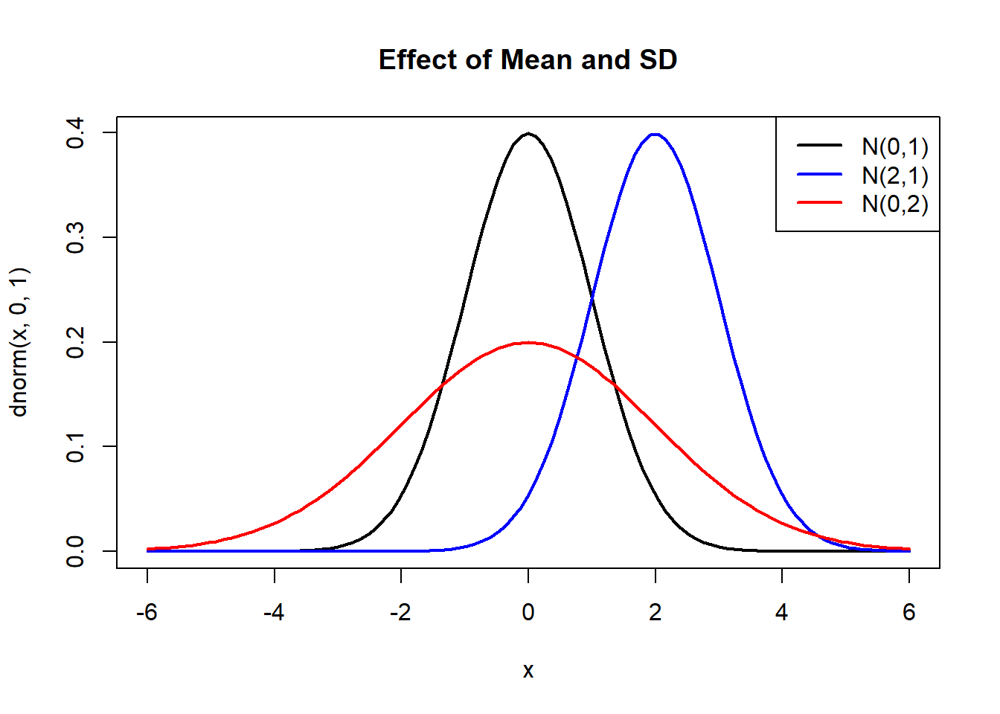
- Changing \(\mu\) shifts the curve horizontally.
- Changing \(\sigma\) stretches or compresses the curve.
5.12.2.3.2.1 Description of the Normal Distribution
Key properties:
- symmetric around \(\mu\)
- bell-shaped
- unimodal (one peak)
- mean = median = mode
- tails extend indefinitely in both directions
Although the curve extends to infinity, most probability mass is concentrated near the center.
5.12.2.3.2.2 Standardization
A crucial idea is standardizing a normal random variable.
If \(X \sim N(\mu,\sigma^2)\), define
\[ Z = \frac{X-\mu}{\sigma}. \]
Then \(Z \sim N(0,1)\).
This allows any normal probability to be computed using the standard normal distribution:
\[ P(a \le X \le b) = P\left(\frac{a-\mu}{\sigma} \le Z \le \frac{b-\mu}{\sigma}\right). \]
In R:
## [1] 0.3829249## [1] 0.3829249Both calculations give the same result.
5.12.2.3.2.3 68–95–99.7 Rule
For a normal distribution:
\[ P(\mu \pm \sigma) \approx 0.68 \]
\[ P(\mu \pm 2\sigma) \approx 0.95 \]
\[ P(\mu \pm 3\sigma) \approx 0.997 \]
We can verify computationally for the standard normal:
## [1] 0.6826895## [1] 0.9544997## [1] 0.9973002Visualization:
curve(dnorm(x), -4,4, lwd=2,
main="68-95-99.7 Rule")
x <- seq(-1,1,length=200)
polygon(c(-1,x,1), c(0,dnorm(x),0), col="lightblue")
x2 <- seq(-2,2,length=200)
polygon(c(-2,x2,2), c(0,dnorm(x2),0), col=rgb(1,0,0,0.2))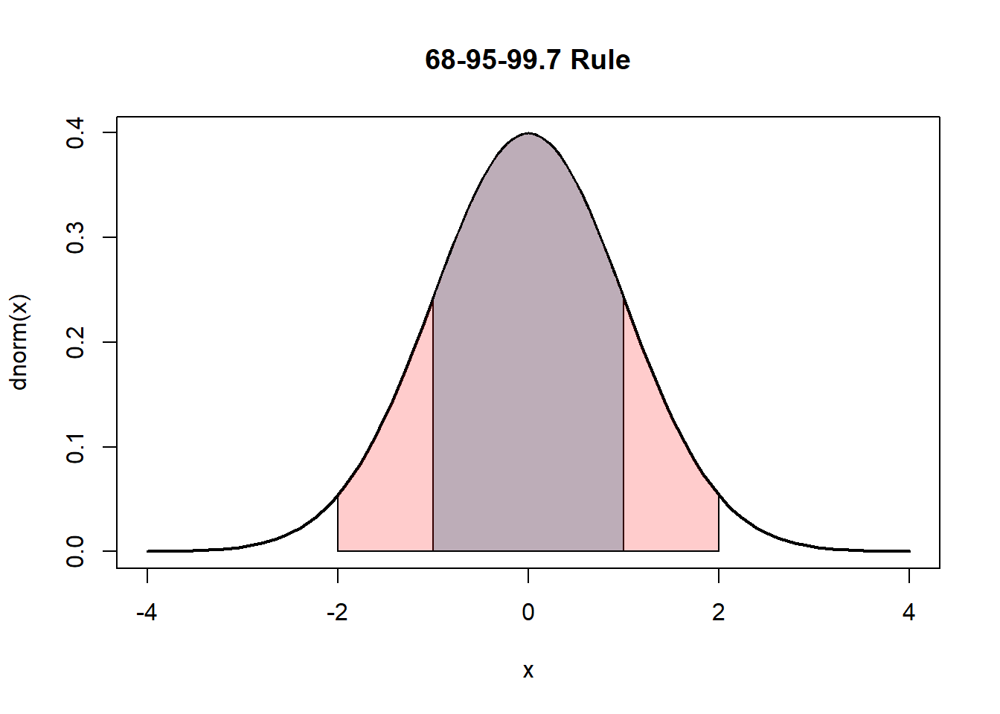
These percentages provide quick approximations for probabilities without computation.
5.12.2.3.2.4 Computing Probabilities in R
For a normal distribution:
dnorm(x, mean, sd)→ densitypnorm(x, mean, sd)→ cumulative probabilityqnorm(p, mean, sd)→ quantilernorm(n, mean, sd)→ simulation
Example:
## [1] 0.2417303## [1] 0.02275013## [1] 0.15865535.12.2.3.2.5 Three Example Calculations
## [1] 0.8413447## [1] 0.02275013## [1] 0.5328072These represent:
- probability below a value
- probability above a value
- probability between two values
5.12.2.3.2.6 From Histogram to Density
A histogram of simulated normal data approximates the theoretical density.
set.seed(2026)
x <- rnorm(1000)
hist(x, probability=TRUE, breaks=30,
main="Histogram Approximating a Density",
col="lightgray", border="white")
curve(dnorm(x, mean(x), sd(x)),
add=TRUE, col="red", lwd=2)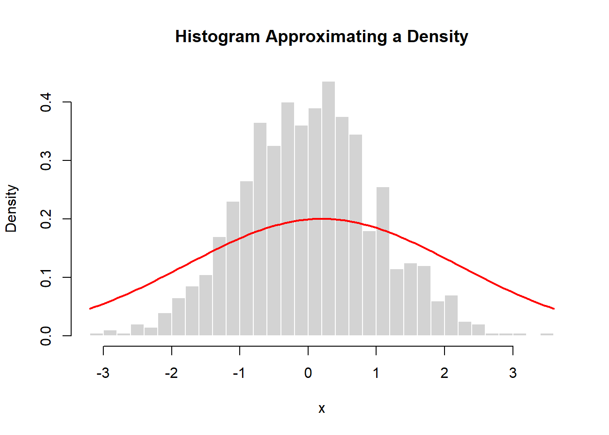
As sample size increases:
- the histogram becomes smoother
- it approaches the theoretical density
This illustrates how densities describe the limiting behavior of large samples.
5.12.2.3.3 Are Observations From the Same Variable?
A histogram may represent:
- repeated measurements of one variable
- measurements from different individuals
For example:
- heights of many people
- repeated measurements of one instrument
- test scores from many students
In all cases, the normal distribution can serve as a useful model. The interpretation depends on context:
- One variable measured repeatedly
- Many individuals with similar variability
The key is whether the distribution of values is approximately normal.
5.12.2.3.3.1 Why the Normal Distribution Matters
The normal distribution is fundamental because:
- It models many natural phenomena.
- It arises from sums of small effects.
- It provides approximations for many other distributions.
- It underlies much of statistical inference.
Most statistical methods—confidence intervals, hypothesis tests, regression—rely on normal-based reasoning. Understanding the normal distribution is therefore essential before moving forward to other continuous distributions.
5.12.2.4 Chi-Squared Distribution
One advantage of working with random variables is that we can form transformations of existing variables and study the resulting distributions. Many important distributions arise as functions of simpler ones.
A central example comes from the normal distribution.
If \(Z \sim N(0,1)\), then
\[ Z^2 \]
follows a chi-squared distribution with 1 degree of freedom. We write
\[ Z^2 \sim \chi^2_1. \]
More generally, if \(Z_1,\dots,Z_k\) are independent standard normal random variables, then the sum of their squares
\[ \sum_{i=1}^k Z_i^2 \]
follows a chi-squared distribution with \(k\) degrees of freedom:
\[ \sum_{i=1}^k Z_i^2 \sim \chi^2_k. \]
The parameter \(k\) is called the degrees of freedom. It determines the shape and spread of the distribution.
This construction is fundamental in statistics because many important quantities—such as sample variances and sums of squared residuals—can be expressed as sums of squared normal variables.
Note: If \(X_1 \sim \chi^2_{k_1}\) and \(X_2 \sim \chi^2_{k_2}\) are independent, then \(X_1 + X_2 \sim \chi^2_{k_1+k_2}\).
5.12.2.4.1 Simulation of a Chi-Squared Distribution
We can build a chi-squared distribution directly from simulated normal variables.
set.seed(2026)
z <- rnorm(10000)
x <- z^2
hist(x, probability=TRUE, breaks=40,
main="Chi-Squared Distribution (df = 1)",
col="lightgray", border="white")
curve(dchisq(x, df=1),
add=TRUE, col="red", lwd=2)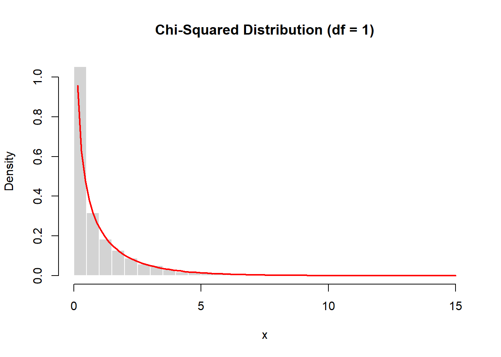
Each value in x is the square of a standard normal observation. The resulting histogram closely matches the theoretical chi-squared density.
This illustrates the transformation:
\[ Z \rightarrow Z^2. \]
5.12.2.4.2 Simulation with Multiple Degrees of Freedom
To generate a chi-squared distribution with \(k\) degrees of freedom, we sum the squares of \(k\) independent standard normal variables.
set.seed(2026)
k <- 5
z <- matrix(rnorm(10000 * k), ncol=k)
x <- rowSums(z^2)
hist(x, probability=TRUE, breaks=40,
main=paste("Chi-Squared Distribution (df =", k, ")"),
col="lightgray", border="white")
curve(dchisq(x, df=k),
add=TRUE, col="red", lwd=2)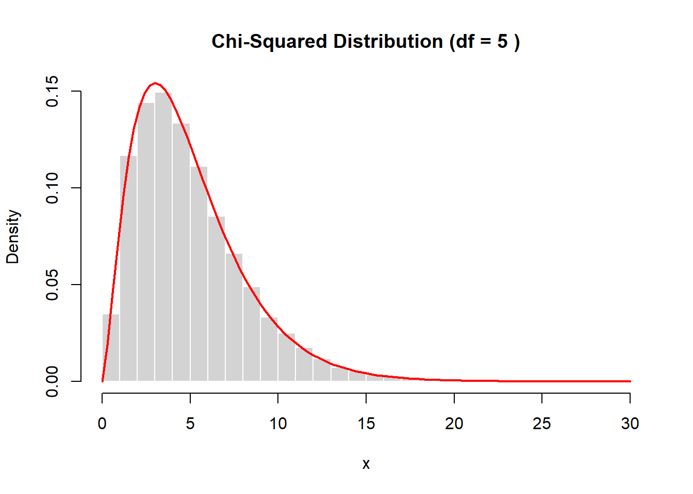
As the number of degrees of freedom increases, the distribution becomes less skewed and more symmetric.
5.12.2.4.3 Shape of the Chi-Squared Distribution
The shape of the chi-squared distribution depends strongly on the degrees of freedom.
Key properties:
- defined only for \(x \ge 0\)
- right-skewed for small \(k\)
- becomes more symmetric as \(k\) increases
- mean = \(k\)
- variance = \(2k\)
Visualization:
curve(dchisq(x,1), 0, 12, lwd=2,
main="Effect of Degrees of Freedom",
ylab="Density")
curve(dchisq(x,5), 0, 12, col="red", lwd=2, add=TRUE)
curve(dchisq(x,10), 0, 12, col="blue", lwd=2, add=TRUE)
legend("topright",
legend=c("df = 1", "df = 5", "df = 10"),
col=c("black","red","blue"),
lwd=2)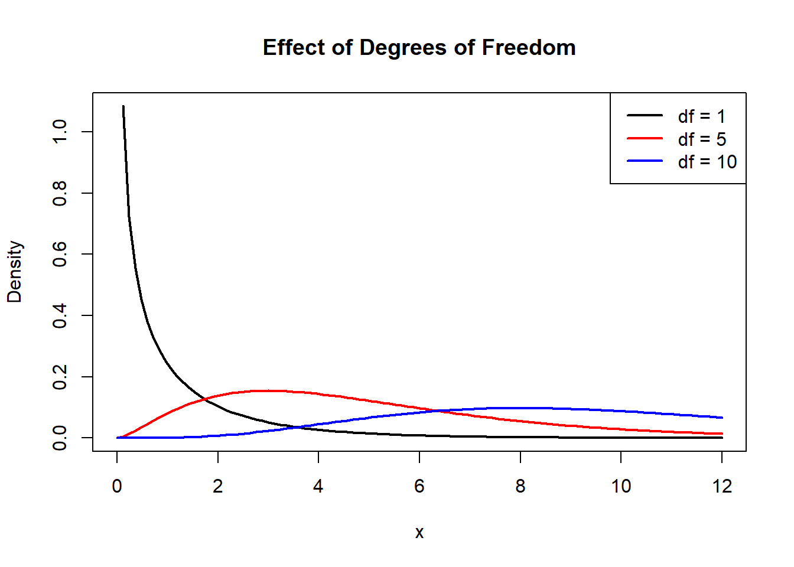
For small degrees of freedom:
- the distribution is highly skewed
- most mass is near zero
For larger degrees of freedom:
- the distribution becomes more bell-shaped
- it begins to resemble a normal distribution
In fact, for large \(k\),
\[ \chi^2_k \approx N(k, 2k). \]
5.12.2.4.4 Why the Chi-Squared Distribution Matters
The chi-squared distribution plays a central role in statistics because it appears naturally when we work with squared deviations.
Examples:
- sample variance of normal data
- sums of squared residuals in regression
- goodness-of-fit tests
- contingency table analysis
Many statistical procedures rely on the fact that certain sums of squared normal variables follow a chi-squared distribution.
5.12.2.4.5 Generating Chi-Squared Values in R
R provides built-in functions for working with the chi-squared distribution:
dchisq(x, df)→ densitypchisq(x, df)→ cumulative probabilityqchisq(p, df)→ quantilerchisq(n, df)→ simulation
Examples:
## [1] 1.861377 6.259160 2.946891 1.461699 3.640620 3.655798 2.338470 1.527219 1.881949 7.641909## [1] 0.7385359## [1] 0.11161025.12.2.4.6 Conceptual Summary
The chi-squared distribution illustrates an important principle:
Transformations of random variables produce new random variables with new distributions.
Starting with standard normal variables and squaring them leads to the chi-squared distribution. Summing multiple squared normals introduces the degrees of freedom parameter.
This connection between normal variables and squared sums is foundational for later topics such as:
- sampling distributions
- variance estimation
- hypothesis testing
- regression analysis
Understanding the chi-squared distribution prepares us for many of the statistical tools developed later in the course.
5.12.2.5 t Distribution
The \(t\) distribution is one of the most important continuous distributions in statistics. It arises naturally when estimating means using small samples and unknown variance. Much of classical statistical inference—confidence intervals, hypothesis tests, regression coefficients—relies on this distribution.
5.12.2.5.1 History
The \(t\) distribution was developed by William Gosset, a statistician working at the Guinness brewery in the early 1900s. Because company policy prohibited publishing under his real name, he wrote under the pseudonym “Student.” For this reason, the distribution is sometimes called the Student’s \(t\) distribution.
Gosset needed methods for making reliable inferences from small samples, where the normal approximation alone was insufficient. His work showed that when variance must be estimated from the data, additional uncertainty must be incorporated into the distribution used for inference. The result was the \(t\) distribution.
5.12.2.5.2 Difference from the Normal Distribution
The \(t\) distribution resembles the normal distribution but has important differences.
Key characteristics:
- symmetric and centered at 0
- bell-shaped
- heavier tails than the normal distribution
- depends on degrees of freedom \(k\)
“Heavier tails” means that extreme values are more likely than under a normal model. This reflects the additional uncertainty introduced when estimating variance from data.
As the degrees of freedom increase,
\[ t_k \longrightarrow N(0,1). \]
Thus, for large samples, the \(t\) distribution becomes nearly indistinguishable from the standard normal distribution.
5.12.2.5.3 Visualization: Effect of Degrees of Freedom
curve(dnorm(x), -4,4, lwd=2,
main="Normal vs t Distributions",
ylab="Density")
curve(dt(x,1), -4,4, col="red", lwd=2, add=TRUE)
curve(dt(x,5), -4,4, col="blue", lwd=2, add=TRUE)
curve(dt(x,20), -4,4, col="green", lwd=2, add=TRUE)
legend("topright",
legend=c("Normal","t df=1","t df=5","t df=20"),
col=c("black","red","blue","green"),
lwd=2)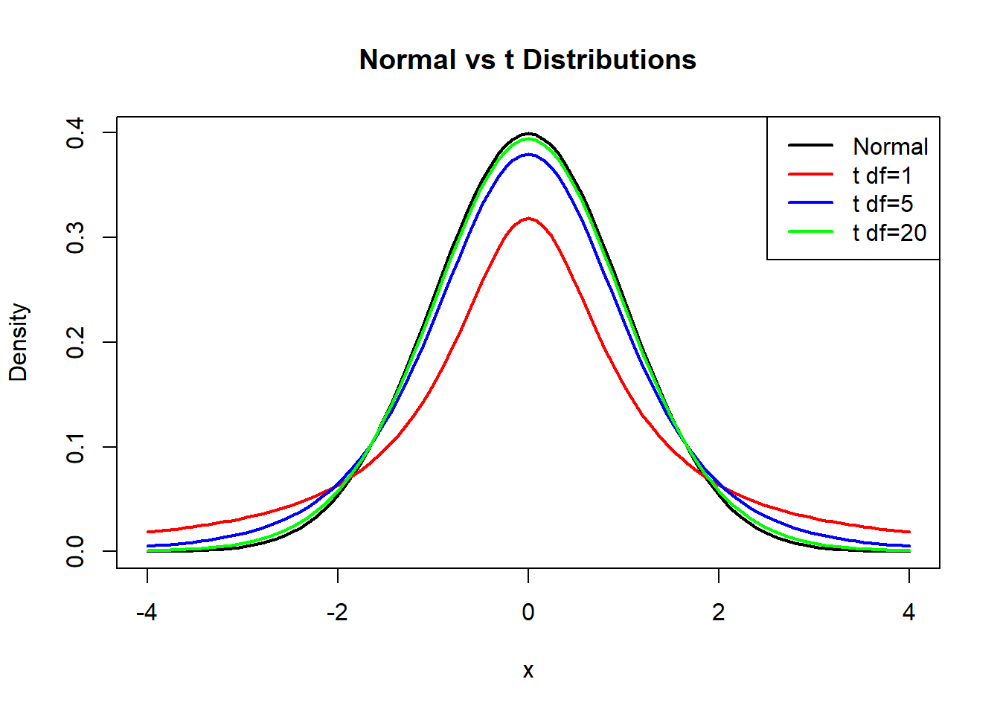
For small degrees of freedom:
- tails are very heavy
- extreme values are more common
For large degrees of freedom:
- the curve approaches the normal density
5.12.2.5.4 Derivation from Normal and Chi-Squared Variables
The \(t\) distribution arises from combining a normal random variable and a chi-squared random variable.
If
\[ Z \sim N(0,1), \quad U \sim \chi^2_k, \]
and \(Z\) and \(U\) are independent, then
\[ T = \frac{Z}{\sqrt{U/k}} \]
follows a \(t\) distribution with \(k\) degrees of freedom. We write
\[ T \sim t_k. \]
This construction shows that the \(t\) distribution accounts for the variability introduced by estimating variance. The denominator \(\sqrt{U/k}\) behaves like a random estimate of the standard deviation, which introduces extra spread compared with the normal distribution.
5.12.2.5.5 Simulation from Definition
We can simulate the \(t\) distribution directly from its defining relationship.
set.seed(2026)
z <- rnorm(10000)
u <- rchisq(10000, df=5)
t <- z / sqrt(u/5)
hist(t, probability=TRUE, breaks=40,
main="t Distribution (df = 5)",
col="lightgray", border="white")
curve(dt(x, df=5),
add=TRUE, col="red", lwd=2)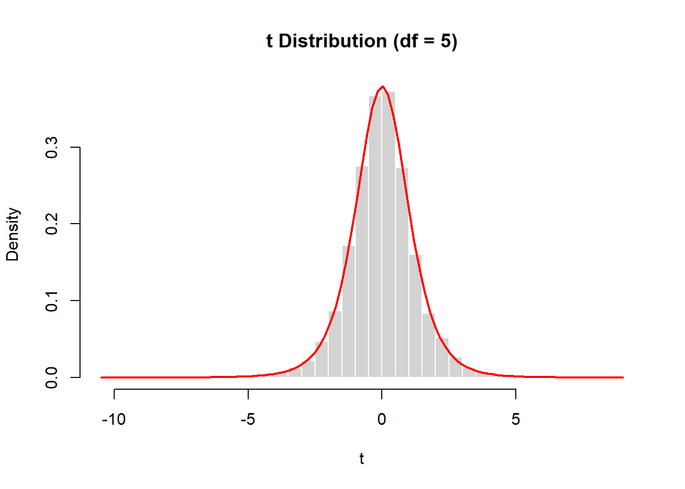
The simulated histogram aligns closely with the theoretical \(t\) density.
5.12.2.5.6 Generating t Values in R
R provides built-in functions for the \(t\) distribution:
dt(x, df)→ densitypt(x, df)→ cumulative probabilityqt(p, df)→ quantilert(n, df)→ simulation
Examples:
## [1] -3.68826252 -1.07843091 2.39899684 -0.14320625 0.37991643 -0.04020562 -1.25015796 1.52204650 -0.45327619 -2.40707048## [1] 0.9030482## [1] 0.050969745.12.2.5.7 Why the t Distribution Matters
The \(t\) distribution is central to statistical inference because it appears whenever we standardize a sample mean using an estimated standard deviation.
If \(X_1,\dots,X_n\) are independent normal observations with unknown variance, then
\[ \frac{\bar{X} - \mu}{S/\sqrt{n}} \]
follows a \(t\) distribution with \(n-1\) degrees of freedom.
This result underlies:
- confidence intervals for means
- hypothesis tests for means
- regression coefficient inference
- many classical statistical procedures
5.12.2.5.8 Conceptual Summary
The \(t\) distribution arises from combining:
- a normal random variable (numerator)
- a chi-squared random variable (denominator)
It reflects the extra uncertainty introduced when variance must be estimated from data.
Compared with the normal distribution:
- same center
- similar shape
- heavier tails
- depends on degrees of freedom
As sample size increases, the \(t\) distribution converges to the normal distribution, linking small-sample inference to large-sample approximations used throughout statistics.
5.12.2.6 F Distribution
The \(F\) distribution is another fundamental continuous distribution that arises from transformations of normal random variables. It plays a central role in comparing variances and in many procedures in regression and analysis of variance.
5.12.2.6.1 History
The \(F\) distribution was introduced by Ronald Fisher in the development of analysis of variance (ANOVA). Fisher needed a distribution for comparing two independent estimates of variance. The ratio of these variance estimates led naturally to the \(F\) distribution.
Today, the \(F\) distribution is used in:
- comparing population variances
- regression model comparisons
- ANOVA
- many hypothesis testing procedures
5.12.2.6.2 Difference from the Normal Distribution
The \(F\) distribution differs substantially from the normal distribution.
Key characteristics:
- takes only positive values
- right-skewed
- depends on two degrees of freedom parameters
- becomes more symmetric as degrees of freedom increase
If \(F \sim F_{d_1,d_2}\), then:
- \(d_1\) = numerator degrees of freedom
- \(d_2\) = denominator degrees of freedom
The shape depends on both parameters.
For small degrees of freedom:
- highly skewed
- long right tail
For large degrees of freedom:
- more concentrated
- less skewed
5.12.2.6.3 Derivation from Chi-Squared Variables
The \(F\) distribution arises from ratios of scaled chi-squared random variables.
If
\[ U_1 \sim \chi^2_{d_1}, \quad U_2 \sim \chi^2_{d_2} \]
are independent, then
\[ F = \frac{U_1/d_1}{U_2/d_2} \]
follows an \(F\) distribution with \((d_1,d_2)\) degrees of freedom:
\[ F \sim F_{d_1,d_2}. \]
This construction shows that the \(F\) distribution measures the relative size of two variance-like quantities. Each chi-squared variable represents a sum of squared normal variables, so their ratio compares two independent estimates of variability.
5.12.2.6.4 Simulation from Definition
We can simulate an \(F\) distribution directly from its definition.
set.seed(2026)
u1 <- rchisq(10000, df=5)
u2 <- rchisq(10000, df=10)
f <- (u1/5)/(u2/10)
hist(f, probability=TRUE, breaks=40,
main="F Distribution (df1 = 5, df2 = 10)",
col="lightgray", border="white")
curve(df(x,5,10),
add=TRUE, col="red", lwd=2)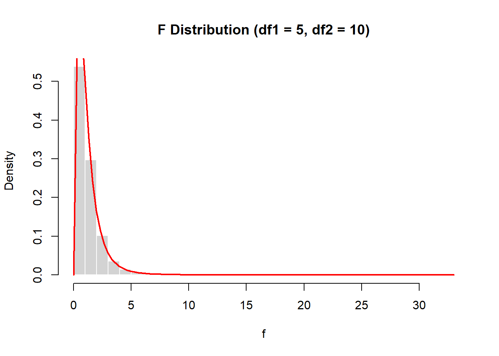
The histogram of simulated values closely matches the theoretical \(F\) density.
5.12.2.6.5 Shape and Behavior
The \(F\) distribution has several notable properties:
- defined only for \(x>0\)
- right-skewed
- mean exists when \(d_2>2\)
- variance exists when \(d_2>4\)
As the denominator degrees of freedom \(d_2\) increase, the distribution becomes less variable. As both degrees of freedom grow large, the distribution becomes more concentrated around 1.
Visualization for different parameters:
curve(df(x,1,5), 0,5, lwd=2,
main="Effect of Degrees of Freedom",
ylab="Density")
curve(df(x,5,5), 0,5, col="red", lwd=2, add=TRUE)
curve(df(x,10,10), 0,5, col="blue", lwd=2, add=TRUE)
legend("topright",
legend=c("F(1,5)","F(5,5)","F(10,10)"),
col=c("black","red","blue"),
lwd=2)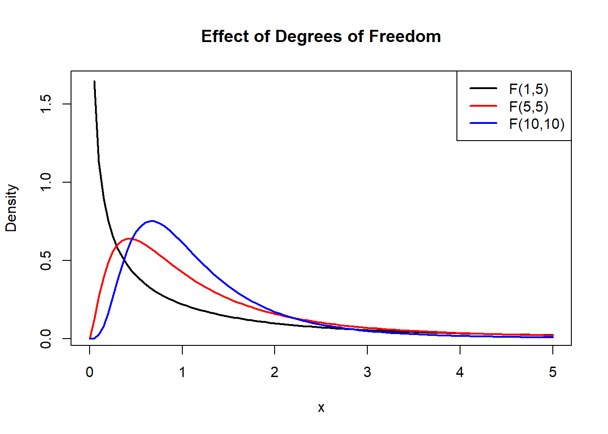
5.12.2.6.6 Generating F Values in R
R includes built-in functions for the \(F\) distribution:
df(x, d1, d2)→ densitypf(x, d1, d2)→ cumulative probabilityqf(p, d1, d2)→ quantilerf(n, d1, d2)→ simulation
Examples:
## [1] 1.2125722 0.5195305 0.3304498 2.0613735 0.9729444 0.1864224 0.4309595 0.6210289 1.9900651 0.1281117## [1] 0.835805## [1] 0.065557565.12.2.7 Connection Between These Distributions
These three distributions are tightly connected through the standard normal distribution:
If \(Z \sim N(0,1)\), then \[ Z^2 \sim \chi^2_1 \]
If \[ Z \sim N(0,1), \quad U \sim \chi^2_k, \] with independence, then \[ \frac{Z}{\sqrt{U/k}} \sim t_k \]
If \[ U_1 \sim \chi^2_{d_1}, \quad U_2 \sim \chi^2_{d_2}, \] with independence, then \[ \frac{U_1/d_1}{U_2/d_2} \sim F_{d_1,d_2} \]
So the standard normal distribution is the starting point, the chi-squared distribution comes from squaring and summing independent standard normals, the \(t\) distribution comes from dividing a standard normal by the square root of a scaled chi-squared variable, and the \(F\) distribution comes from taking the ratio of two scaled chi-squared variables.
This hierarchy is very important because it shows that many of the distributions used in inference are all built from the same basic normal model.
5.13 Summary
- Probability models a theoretical distribution
- Data are realizations from that distribution
- Events describe subsets of outcomes
- Random variables translate outcomes into numbers
- Distributions describe variability
- Expectation and variance summarize key features
In this chapter, probability was introduced as the mathematical framework that connects observed data to the underlying process that generates them.
The key transition is from describing what was observed to modeling what could occur. This requires defining random experiments, sample spaces, events, random variables, and probability distributions.
These concepts provide the foundation for later topics such as random sampling, sampling distributions, and statistical inference. Probability is what allows statistics to move beyond a single observed dataset and reason about uncertainty in a principled way.